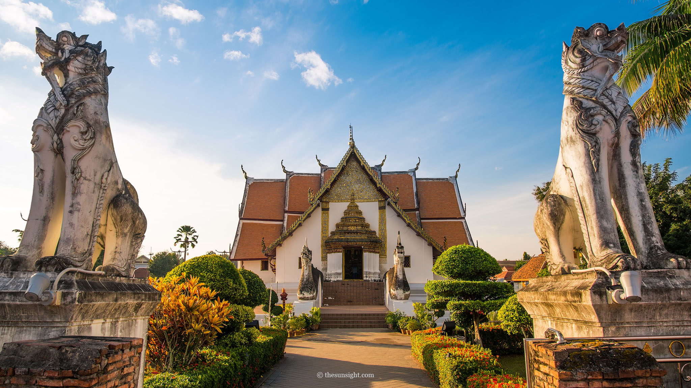
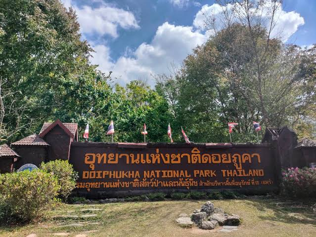
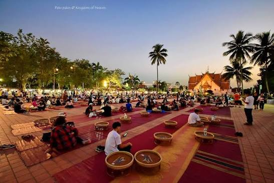
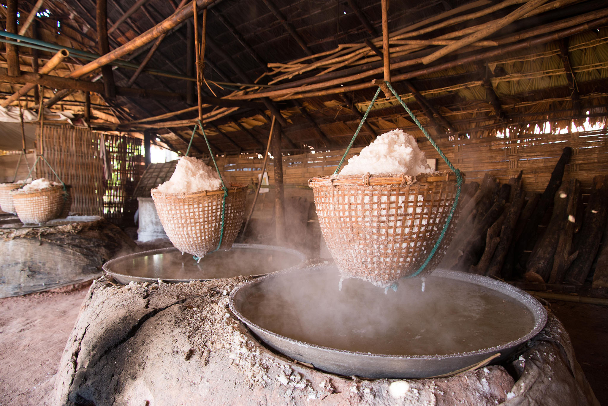
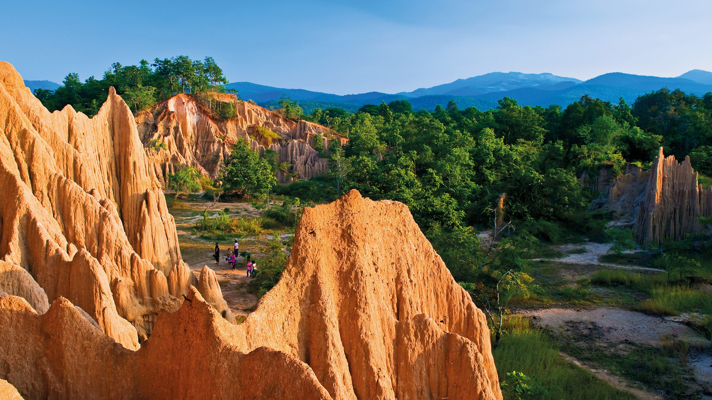
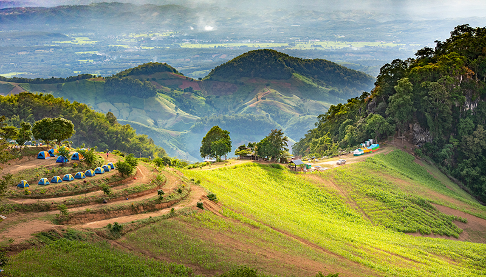
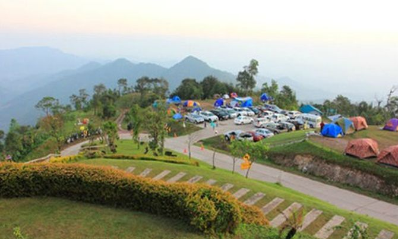

สถานที่ท่องเที่ยวสำคัญของจังหวัดน่าน
จังหวัดน่านเป็นจังหวัดที่มีแหล่งท่องเที่ยวหลากหลาย ทั้งสถานที่ทางประวัติศาสตร์ ศาสนสถาน ธรรมชาติ ภูเขา น้ำตก และแหล่งเรียนรู้ทางวัฒนธรรม นักท่องเที่ยวสามารถสัมผัสบรรยากาศของเมืองเก่า เรียนรู้วิถีชีวิตของชุมชน และเดินทางไปชมธรรมชาติที่มีความสวยงามได้ตลอดทั้งปี
ลักษณะภูมิประเทศของจังหวัดน่านมีภูเขาและป่าไม้เป็นส่วนใหญ่ จึงมีแหล่งท่องเที่ยวทางธรรมชาติที่โดดเด่นจำนวนมาก ขณะเดียวกันบริเวณตัวเมืองก็มีวัดและโบราณสถานที่สะท้อนประวัติศาสตร์และศิลปวัฒนธรรมของชาวน่าน
1. วัดภูมินทร์

วัดภูมินทร์เป็นหนึ่งในสถานที่สำคัญและเป็นสัญลักษณ์ของจังหวัดน่าน ตั้งอยู่ในบริเวณใจกลางเมือง มีสถาปัตยกรรมที่โดดเด่นเป็นเอกลักษณ์ โดยมีลักษณะเป็นอาคารจตุรมุข ซึ่งเป็นรูปแบบที่พบได้ไม่มากนัก
ภายในวัดมีภาพจิตรกรรมฝาผนังที่มีชื่อเสียง โดยเฉพาะภาพชายหญิงที่มักเรียกกันว่า “ปู่ม่านย่าม่าน” ซึ่งเป็นภาพที่สะท้อนวิถีชีวิต การแต่งกาย และวัฒนธรรมของผู้คนในอดีต
2. วัดพระธาตุแช่แห้ง
พระธาตุแช่แห้งเป็นพระธาตุสำคัญคู่บ้านคู่เมืองน่าน ตั้งอยู่บริเวณริมแม่น้ำน่านในพื้นที่อำเภอภูเพียง เป็นศาสนสถานที่มีความสำคัญทั้งด้านประวัติศาสตร์และความเชื่อของประชาชนในจังหวัด
องค์พระธาตุมีสถาปัตยกรรมแบบล้านนาและมีความงดงามโดดเด่น นักท่องเที่ยวสามารถเดินทางมาไหว้พระ ทำบุญ และศึกษาศิลปวัฒนธรรมของน่านได้
3. อุทยานแห่งชาติดอยภูคา

อุทยานแห่งชาติดอยภูคาเป็นแหล่งท่องเที่ยวทางธรรมชาติที่มีชื่อเสียงของจังหวัดน่าน พื้นที่ส่วนใหญ่ประกอบด้วยภูเขาสูงและป่าไม้ที่มีความอุดมสมบูรณ์
ดอยภูคามียอดเขาสูงประมาณ 1,910 เมตรจากระดับน้ำทะเลปานกลาง ถือเป็นยอดเขาที่สูงที่สุดของจังหวัดน่าน บริเวณโดยรอบมีธรรมชาติที่สวยงามและมีอากาศค่อนข้างเย็น โดยเฉพาะในช่วงฤดูหนาว
นักท่องเที่ยวสามารถชมวิวภูเขา สัมผัสอากาศบริสุทธิ์ และเรียนรู้ความหลากหลายของระบบนิเวศในพื้นที่ได้
4. ถนนคนเดินกาดข่วงเมืองน่าน

ถนนคนเดินในตัวเมืองน่านเป็นแหล่งท่องเที่ยวที่สะท้อนวิถีชีวิตและวัฒนธรรมของคนในท้องถิ่น นักท่องเที่ยวสามารถเดินชมสินค้า อาหารพื้นเมือง และงานหัตถกรรมของชาวน่าน
บริเวณถนนคนเดินมีบรรยากาศที่เป็นกันเอง และมักมีการนำสินค้าท้องถิ่น เช่น ผ้าทอ เครื่องเงิน ของที่ระลึก และอาหารพื้นเมืองมาจำหน่าย
5. บ่อเกลือสินเธาว์

บ่อเกลือเป็นแหล่งท่องเที่ยวที่มีชื่อเสียงของจังหวัดน่าน ตั้งอยู่ท่ามกลางภูเขาและธรรมชาติ โดยมีการผลิตเกลือสินเธาว์ด้วยวิธีการแบบดั้งเดิมที่สืบทอดต่อกันมาหลายชั่วอายุคน
นักท่องเที่ยวสามารถเรียนรู้กระบวนการผลิตเกลือ ชมวิถีชีวิตของคนในชุมชน และเลือกซื้อผลิตภัณฑ์จากเกลือเป็นของฝากได้
6. เสาดินนาน้อย

เสาดินนาน้อยเป็นแหล่งท่องเที่ยวทางธรรมชาติที่มีลักษณะทางธรณีวิทยาโดดเด่น เกิดจากการกัดเซาะของธรรมชาติเป็นเวลานานจนเกิดเป็นเสาดินและรูปร่างต่าง ๆ
บริเวณโดยรอบมีภูมิประเทศที่แตกต่างจากพื้นที่ภูเขาทั่วไป จึงเป็นสถานที่ที่เหมาะสำหรับการชมธรรมชาติ ถ่ายภาพ และศึกษาการเปลี่ยนแปลงของภูมิประเทศ
7. ดอยเสมอดาว

ดอยเสมอดาวเป็นสถานที่ท่องเที่ยวทางธรรมชาติที่ได้รับความนิยม ตั้งอยู่ในพื้นที่อุทยานแห่งชาติศรีน่าน จุดเด่นของสถานที่แห่งนี้คือสามารถชมทิวทัศน์ของภูเขาและธรรมชาติได้อย่างกว้างไกล
ในช่วงกลางคืน หากสภาพอากาศเหมาะสม นักท่องเที่ยวสามารถมองเห็นท้องฟ้าที่เต็มไปด้วยดวงดาว ทำให้สถานที่แห่งนี้ได้รับความนิยมสำหรับผู้ที่ต้องการสัมผัสธรรมชาติและบรรยากาศที่สงบ
8. สะปัน
สะปันเป็นชุมชนเล็ก ๆ ที่ตั้งอยู่ท่ามกลางหุบเขาและธรรมชาติในอำเภอบ่อเกลือ มีลำธารและพื้นที่ป่าโดยรอบ ทำให้มีบรรยากาศที่เงียบสงบและเหมาะสำหรับการพักผ่อน
นักท่องเที่ยวสามารถชมธรรมชาติ สัมผัสวิถีชีวิตของชุมชน และเดินทางไปยังจุดชมวิวหรือน้ำตกในบริเวณใกล้เคียงได้
9. อุทยานแห่งชาติศรีน่าน

อุทยานแห่งชาติศรีน่านเป็นพื้นที่อนุรักษ์ธรรมชาติที่มีภูเขา ป่าไม้ และจุดชมวิวที่สวยงาม โดยมีสถานที่ท่องเที่ยวที่เป็นที่รู้จัก เช่น ดอยเสมอดาวและผาหัวสิงห์
พื้นที่แห่งนี้เหมาะสำหรับผู้ที่ชื่นชอบการท่องเที่ยวเชิงธรรมชาติ การชมวิวภูเขา และการศึกษาระบบนิเวศของพื้นที่ป่าในจังหวัดน่าน
เสน่ห์ของการท่องเที่ยวจังหวัดน่าน
เสน่ห์ของจังหวัดน่านไม่ได้มีเพียงสถานที่ท่องเที่ยวที่สวยงาม แต่ยังอยู่ที่ความเรียบง่ายของวิถีชีวิต ผู้คน วัฒนธรรม อาหารพื้นเมือง และธรรมชาติที่ยังคงความอุดมสมบูรณ์ ทำให้น่านเป็นจังหวัดที่เหมาะสำหรับผู้ที่ต้องการพักผ่อนและสัมผัสบรรยากาศที่แตกต่างจากเมืองท่องเที่ยวขนาดใหญ่
การท่องเที่ยวเชิงธรรมชาติ
ด้วยพื้นที่ส่วนใหญ่ของจังหวัดเป็นภูเขาและป่าไม้ น่านจึงมีทรัพยากรธรรมชาติที่เหมาะสำหรับการท่องเที่ยวเชิงอนุรักษ์ นักท่องเที่ยวสามารถเดินทางไปชมป่า ภูเขา น้ำตก จุดชมวิว และแหล่งน้ำธรรมชาติได้
การท่องเที่ยวเชิงวัฒนธรรม
น่านยังมีวัด โบราณสถาน และชุมชนเก่าแก่จำนวนมาก ซึ่งสะท้อนให้เห็นถึงความสัมพันธ์ระหว่างประวัติศาสตร์ ศาสนา และวิถีชีวิตของคนในพื้นที่ การเดินทางท่องเที่ยวจึงสามารถควบคู่ไปกับการเรียนรู้วัฒนธรรมท้องถิ่นได้
การท่องเที่ยวอย่างรับผิดชอบ
นักท่องเที่ยวควรร่วมกันรักษาความสะอาด ไม่ทิ้งขยะในพื้นที่ธรรมชาติ ไม่ทำลายทรัพยากร และเคารพวิถีชีวิตของคนในชุมชน เพื่อให้สถานที่ท่องเที่ยวของจังหวัดน่านยังคงความสวยงามและสามารถใช้ประโยชน์ได้อย่างยั่งยืนในอนาคต
← กลับหน้าแรก